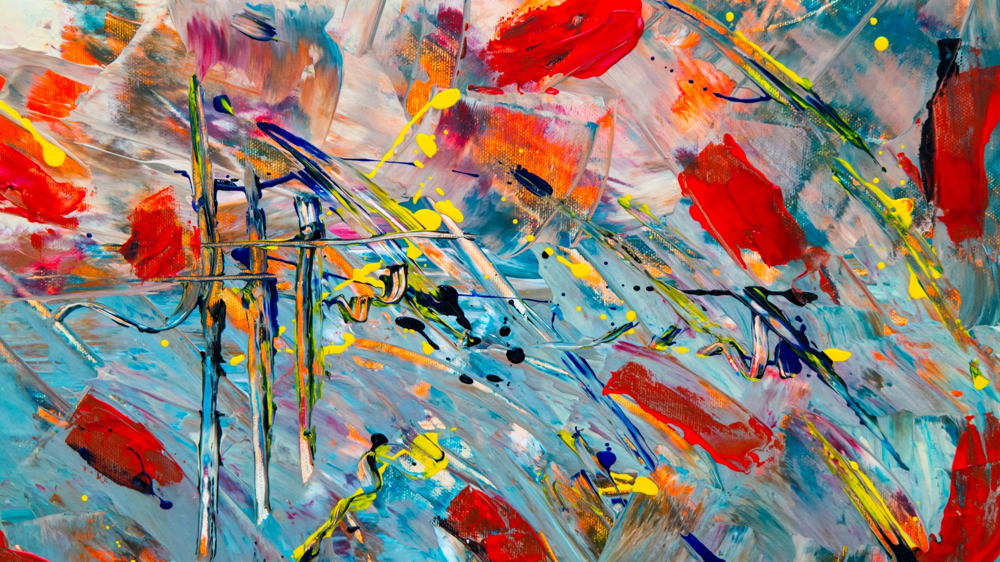

Patricia Langevin’s art is characterized by layers of depth and resonance, colorful lyricism, and a plethora of tactile surfaces. With an animated approach and sophisticated vocabulary, the artist unleashes a treasure trove of emotive possibilities and interpretations. Most admirable is her versatile creative approach in using mixed media and her techniques in brushwork and mark-making. She deftly combines the spontaneous dynamics of acrylic paint with Stabilo woody pencils, Caran D’ache Neocolor pastels, graphite sticks, and chalk blocks. As a superb colorist she integrates a range of contrasting and complementary colors with unbridled confidence. Her skillful use of brushes, palette knives and other tools further expand her visual language. Patricia’s art embodies the inherent abstract characteristics in which an interplay of shapes, sizes, colors, and rhythms express her ideas and feelings. Additionally, her keen sensitivity to the natural world enlivens her art with a profound experience for the viewer. We are swept into an exciting visual realm that encompasses nature’s vast sensibilities and elements and we feel its powerful visceral impact.